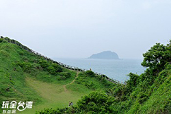

鷄籠中元祭
|
〔圖片及資料來源 / 景點主題網〕
雞籠中元祭是為交通部觀光局所制定的十二項重要節慶活動之一，中元祭典自農曆七月一日老大公廟開龕門開始，歷經十二日主普壇開燈放彩，十三日迎斗燈遶境祈福，十四日放水燈遊行，海濱放水燈頭，十五日公私普渡、跳鍾馗以及八月一日的關龕門，活動為期一個月，與歐美傳統萬聖節及日本百鬼夜行類似。每項祭典儀式的背後皆獨具特殊的歷史根據和民俗文化之意涵。近幾年除了傳統的祭典儀式外，同時也結合相關文化藝術元素，包含舉行藝文特展，及安排國內外知名團隊參與演出，8/16為放水燈遊行。 |
國立海洋科技博物館
|
〔圖片及資料來源 / 旅遊資訊王〕
位在基隆市東側的八斗子地區，西鄰八斗子、碧砂漁港、東接東北角海岸風景特定區，有台2線(濱海公路)及台鐵鐵路深澳支線經過，在1997年開始籌備，2013年甫完成所有工程之博物館，是除了屏東車城的海生館外，另一座以海洋為主題，闡述海洋和人類生活的交互關係。海洋館區內部分為主題館區、區域探索館、海洋生態館和海洋3D劇場等區塊。此外，周邊研究和景觀設施，有八斗子公園、潮境海洋研究中心、環保復育公園、潮境公園和碧砂漁港，可欣賞知名的八斗子夕照，遠眺基隆山和九份景觀，探索旅野平疇、65高地景觀設計提供不同視角俯瞰八斗子的景緻與海天一色的廣闊視野；容園的美麗的綠色隧道，也是拍攝婚紗與漫遊的推薦之處。15人以上可預約導覽，需7天前預約。 |
基隆潮境公園（近國立海洋科技博物館）
|
〔圖片及資料來源 / 玩全台灣旅遊網〕
潮境公園潮境公園位於八斗子半島東側，臨望海巷海灣（或稱為換番大澳），面積約一公頃，園區原為一處垃圾的集放地，經海洋科技博物館籌備處規劃改建後，後成為一處看海賞景的最佳去處。園區內設有規劃完善的枕木步道，還有許多藝術雕塑品。除此之外，更為欣賞美麗的海景、基隆山、九份的絕佳地點。潮境公園內設有停車場、大草皮、魚群雕塑、腳踏車道、溜滑梯、觀景座椅、噴水池等多元化休閒設施，讓遊客身心獲得放鬆。 |
大武崙砲台
|
〔圖片及資料來源 / 玩全台灣旅遊網〕
位在大武崙山中、情人湖東方，砲台、古堡均是清道光初年中法戰爭所留下來的遺跡。大武崙砲台是扼守基隆港口西側的重要據點，在英法聯軍及中法戰爭時，清廷均曾派其駐防。特別是中法戰爭的時候，只有台灣的戰場，戰勝法軍。當日本要接收台灣時，還因為畏懼基隆的砲台，守備完備，因而特地繞道貢寮海邊登陸。如今所看到的大武崙砲台，是日治時期重建的，規模不小，迄今尚稱完整，列屬國家二級古蹟。大武崙山原為禁區，因此人跡罕至。由青石舖成的坑道，環繞砲台一圈，周圍除西北面茅草略長以外，其餘三面皆可通行無阻。堡內則見廢棄的蓄水池、戰壕、坑道和營房。 |
情人湖公園（近大武崙砲台）
|
〔圖片及資料來源 / 玩全台灣旅遊網〕
位在大武崙山上的情人湖公園，原本稱為五義埤，有基隆人的後花園之稱，這是由六條山澗集流而成的Ｙ型高地湖泊。公園裡規劃了環湖步道、情人吊橋、觀景平台與風車等，相傳只要情人攜手走過情人吊橋就會有好的結果，沿著碧波粼粼的環湖步道漫步，還可以享受湖畔的森林浴SPA，閒暇時不彷帶根釣竿坐在岸邊釣魚。值得一提的是湖畔旁的樹木都是由鳥兒叼來的種子，並不是刻意栽種，是一個擁有豐富天然樹種的公園。 |
外木山海濱
|
〔圖片及資料來源 / 玩全台灣旅遊網〕
外木山海岸位在基隆港的西側，是目前基隆市境內最長的海岸，也是一個讓人最容易親近的海岸，這裡不僅有沙灘、海水、漁港與自行車道，還可以遠眺基隆嶼、金山與萬里的海岸線，是依處不可多得的海濱勝地。外木山屬於海蝕平台地形，非常適合浮淺戲水，加上有灣澳相伴，形成了一處美麗的海上公園，在這裡有海風吹拂與沁涼的海水，不論是觀日出或是看夕陽西照都別有一番風情。 |
基隆廟口
 |
〔圖片及資料來源 / 長榮桂冠酒店-基隆旅遊資訊〕
基隆廟口的規劃－仁三路
基隆廟口範圍從仁三路至愛四路；仁三路的小吃攤位區是基隆廟口最早形成的攤位區，歷史比其他攤位區久，從奠濟宮前的攤位加起來一共70多個小吃攤位，攤位是固定式而且每家都有統一格式的招牌，各家攤位每天從白天開始營業至晚間，仁三路路段每天從下午5點開始實施交通管制，汽車不得駛入此區。仁三路擁有許多著名的小吃，像是泡泡冰、鼎邊銼、營養三明治、蚵仔煎、蝦仁羹、豆簽羹、天婦羅等等，民眾若想嚐嚐這些美味可要來仁三路逛逛。
基隆廟口的規劃－愛四路
愛四路段攤位被規劃為流動攤位區，於每天下午5點起實施交通管制，只有合法登記的攤位才可開始搭設攤位營業，在其他白天時間這裡是不可以擺設攤位的，雖然屬於流動攤位，但是大致上攤販們都有固定的營業地點，例如甜酒釀元宵、鰻魚羹、豬腳專家、奶油螃蟹等都在愛四路營業；而在愛四路攤位區後半段則大多是一些服飾、鞋子、生活用品、玩具之類的攤販，民眾可以來此採買新潮的用品。 |
望憂谷
|  |
〔圖片及資料來源 / 玩全台灣旅遊網〕
「望幽谷」又名「忘憂谷」，意指站在高處俯瞰綠色山谷使人「忘」卻所有煩「憂」，是八斗子海濱公園觀景台下方綠油油的青翠谷地，春夏之際綠草如茵，秋冬歲末則變成了一片奶油色的大地。望幽谷是一個Ｖ字型的山谷，除了翠綠的草地，還有八斗子漁港來往的漁船，以及可遠眺海另一端的基隆嶼，夜晚時分海面上漁火點點與九份山城的燈火形成一齣唯美的山海之戀。這裡設有多條的石版步道，漫步至海灘，有豆腐岩與海蝕地形等的地質景觀，還可以抓螃蟹與撿貝類，享受當一日漁夫的體驗。 |
九份基山老街
 |
〔圖片及資料來源 / 新北市觀光旅遊網〕
走進九份最熙攘的街道基山街，商家櫛比鱗次，小吃店溢出濃濃香味，琳瑯滿目的民俗藝品攤，還有古早式雜貨鋪、民宿、茶藝館，洋溢著懷舊風情的熱鬧氣氛，順著人潮走，一起感受老街的熱鬧繁華。街道兩旁的特色店家，販賣許多竹製的各式藝品、復古玩意、小物的店家，是許多遊客特地前來搜尋的寶地。走進復古玩具商家，勾起許多大朋友的兒時記趣，也是小朋友喜愛停駐的一站，不同年代的玩具，卻有著相同的趣味及玩興。琳瑯滿目、應有盡有的九份紀念木製明信片，可以貼郵票寄出，木屐、木屐吊飾也是許多遊客到此會選購的紀念品。跟著排隊人龍，排隊嚐食趣。 |
平溪老街
|
〔圖片及資料來源 / 新北市觀光旅遊網〕
平溪老街不像九份、深坑、鶯歌或是三峽老街那樣，整年無論平日、假日，都能邊逛、邊買、邊吃。有著古樸的風味，沿著斜斜的山坡以及鐵道兩旁，依序建蓋著古厝房舍，附近的商家大都多是傳統柑仔店、五金行、小吃店等，可以看出當地居民簡樸單純的生活情形。自從採礦業逐漸沒落後，老街也漸漸沉寂下來。偶爾有兩三隻小狗、小貓經過，或者是當地的老人家在街上緩步徐行、遇到熟人時悠哉悠哉地聊聊天，這就是尋常日子裡的老街風情，充滿著閒情逸致。平溪是離臺北市區不遠的世外桃源，能實踐「慢活、慢慢走」的生活情調。每當平溪火車通過老街上方的鐵路時，就會傳來轟隆轟隆的聲響，知名的廣告「張君雅小妹妹」，正是在這條有鐵支路通過的平溪老街上拍攝的。鐵道、山林花鳥與昔日採礦遺跡，都是遊賞的好景點，而日治時期所遺留下來的防空洞與觀音巖的八仙洞，也是遊人探險的好去處。 |
Copyright © 2016 National Taiwan University
版權所有 國立台灣大學 資訊工程學系
地址：台北市大安區羅斯福路四段1號
© 2016 National Taiwan University. All Rights Reserved.